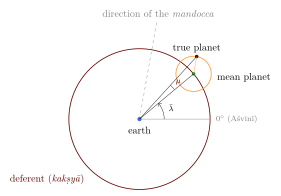
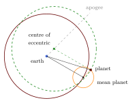

Chapter 7: Planetary Theory: Mean and True Motion¶
7.1 The Problem¶
The Sun, Moon and planets do not move uniformly along the ecliptic. The Sun takes longer to pass through some signs than others, so that the seasons are of unequal length. The Moon’s daily motion varies between about twelve and fifteen degrees. The five planets visible to the naked eye (Indian tārāgrahas, “star-planets”) behave more strangely still: from time to time each slows, stops, moves backwards (westward) for a while, stops again and resumes its forward motion. Mercury and Venus never move more than a limited distance from the Sun, appearing alternately as morning and evening stars.
The siddhāntas account for these irregularities by two corrections applied to the mean position computed from the great cycles (Chapter 6). The first, the manda (“slow”) correction, corresponds to what modern astronomy calls the equation of centre: the effect of the elliptical shape of an orbit. The second, the śīghra (“fast”) correction, applied only to the five planets, corresponds to the effect of viewing the planet from a moving earth. The siddhāntas describe both in geocentric terms, as the effects of epicycles, with the bodies arranged around the earth in the same order as in Ptolemy: the Moon, Mercury, Venus, the Sun, Mars, Jupiter and Saturn, and beyond them the stars (Table 5.2).
7.2 The Manda Correction¶
7.2.1 The model¶
In the manda model a point, the mean planet, moves uniformly around a circle (the deferent, kakṣyā) centred on the earth. The true planet lies on a smaller circle, the manda epicycle, centred on the mean planet. As the mean planet moves forward, the true planet moves around the epicycle in the opposite direction at the same rate, so that the line from the centre of the epicycle to the planet always points in the same direction, towards the apogee (mandocca, “slow apex”). The effect is that the planet moves slowest when it is farthest from the earth, in the direction of the mandocca, and fastest at the opposite point. Āryabhaṭa notes that the same motion can be produced by an eccentric circle, and the equivalence of eccentric and epicycle was standard (Āryabhaṭa 1976).

7.2.2 Epicycle and eccentric¶
The same motion can be described in two ways. In the epicycle form, the planet moves on a small circle whose centre travels around the earth. In the eccentric form, the planet moves uniformly on a single circle of the same size as the deferent, whose centre is displaced from the earth towards the apogee by a distance equal to the radius of the epicycle. Elementary geometry shows that the two constructions put the planet at exactly the same place at every moment (Figure 7.2). Indian astronomers used both, choosing whichever was more convenient for the problem in hand, and the commentators explain the equivalence. The eccentric form makes clear that the manda correction represents an off-centre orbit; in modern terms the eccentricity of the orbit is about half the ratio of the epicycle radius to the deferent radius.

7.2.3 The rule¶
Let \(\bar\lambda\) be the mean longitude and \(\lambda_A\) the longitude of the mandocca. The manda anomaly (mandakendra) is \(\kappa = \bar\lambda - \lambda_A\). If the circumference of the epicycle is \(c\) degrees when that of the deferent is \(360^\circ\), the correction (mandaphala) is, in the form used by Āryabhaṭa and the Sūryasiddhānta,
and the corrected longitude is \(\bar\lambda - \mu\): the correction is subtractive when the anomaly lies between \(0^\circ\) and \(180^\circ\) (the mean planet has passed the apogee) and additive otherwise. In the texts the rule is stated with Sines: multiply the Sine of the anomaly by the epicycle and divide by 360, and take the arc of the result.
7.2.4 Variable epicycles¶
A peculiarity of the Indian models is that the epicycles change size. The Sūryasiddhānta gives two values for each epicycle, one at the ends of the odd quadrants of anomaly and one at the ends of the even quadrants, and the size at intermediate points is found by proportion to the Sine of the anomaly. Table 7.1 gives its values. The texts do not explain why the epicycles vary. Modern historians have related the variation, together with the stepwise application of the corrections described below, to the effect that Ptolemy obtained with the equant, a point about which the planet’s angular motion is uniform; this is a modern interpretation of the models, not a statement of their authors (Neugebauer 1975; Plofker 2009).
| Body | Manda (even / odd) | Śīghra (even / odd) |
|---|---|---|
| Sun | \(14 \;/\; 13\tfrac{2}{3}\) | — |
| Moon | \(32 \;/\; 31\tfrac{2}{3}\) | — |
| Mars | \(75 \;/\; 72\) | \(235 \;/\; 232\) |
| Mercury | \(30 \;/\; 28\) | \(133 \;/\; 132\) |
| Jupiter | \(33 \;/\; 32\) | \(70 \;/\; 72\) |
| Venus | \(12 \;/\; 11\) | \(262 \;/\; 260\) |
| Saturn | \(49 \;/\; 48\) | \(39 \;/\; 40\) |
7.3 The Śīghra Correction¶
7.3.1 The model¶
The second correction accounts for the retrograde motion of the planets and the limited elongation of Mercury and Venus. Here too the planet is placed on an epicycle, the śīghra epicycle, whose radius is large. The point towards which the planet on this epicycle is directed is the śīghrocca (“fast apex”). The śīghra anomaly is the difference between the longitude of the śīghrocca and the (manda-corrected) longitude of the planet.
The role of the Sun in this model is different for the two groups of planets, and it is important to state it correctly.
-
For the superior planets (Mars, Jupiter, Saturn), the mean planet moves around the zodiac with the planet’s own sidereal period (about 687 days, 12 years and 29 years), and the śīghrocca is the mean Sun.
-
For the inferior planets (Mercury and Venus), the mean planet is the mean Sun: it moves around the zodiac in a year. The śīghrocca moves with the planet’s own period around the Sun (about 88 and 225 days). The revolution numbers given for Mercury and Venus in Table 6.1 are those of their śīghroccas.
In modern terms, the śīghra correction is the difference between the planet’s heliocentric and geocentric directions. For a superior planet the epicycle reproduces the earth’s annual motion around the Sun as seen from the planet; for an inferior planet the deferent carries the Sun around the earth and the epicycle carries the planet around the Sun.
7.3.2 The rule¶
If \(\sigma\) is the śīghra anomaly and \(r = c/360\) is the ratio of the śīghra epicycle to the deferent, the correction \(\psi\) is given by
and the corrected longitude is \(\lambda + \psi\), the planet being displaced towards the śīghrocca. Here \(K\) is the “hypotenuse” (karṇa), the distance of the planet from the earth in units of the deferent radius. Equivalently, \(\tan\psi = r\sin\sigma / (1 + r\cos\sigma)\). Unlike the manda correction, which is small, the śīghra correction can amount to tens of degrees; the division by the hypotenuse is essential.
7.3.3 What the śīghra epicycles encode¶
The ratios of the śīghra epicycles to the deferent are very close to the ratios of the sizes of the planetary orbits in the heliocentric system: for a superior planet, the radius of the earth’s orbit divided by that of the planet; for an inferior planet, the radius of the planet’s orbit divided by that of the earth (Table 7.2).
| Planet | Epicycle / 360 | Modern ratio | Ratio meant |
|---|---|---|---|
| Mercury | 0.369 | 0.387 | Mercury’s orbit / earth’s orbit |
| Venus | 0.728 | 0.723 | Venus’s orbit / earth’s orbit |
| Mars | 0.653 | 0.656 | earth’s orbit / Mars’s orbit |
| Jupiter | 0.194 | 0.192 | earth’s orbit / Jupiter’s orbit |
| Saturn | 0.108 | 0.105 | earth’s orbit / Saturn’s orbit |
The ratios can be checked against a simple observable quantity. For an inferior planet, the greatest angular distance from the Sun (the maximum elongation) is reached when the line of sight is tangent to the śīghra epicycle, so that \(\sin(\text{maximum elongation}) = r\). For Venus this gives \(\arcsin 0.728 \approx 46.7^\circ\), and for Mercury \(\arcsin 0.369 \approx 21.7^\circ\). The observed greatest elongations of Venus are about \(45^\circ\) to \(47^\circ\), and those of Mercury, whose orbit is very eccentric, range from about \(18^\circ\) to \(28^\circ\). The śīghra epicycles were thus fixed, directly or indirectly, by observations of exactly this kind.
This agreement is sometimes presented as evidence that Indian astronomers secretly knew the heliocentric system. It is not. Any geocentric model that reproduces the observed retrograde arcs and maximum elongations correctly must contain these ratios, because the size of the retrograde loop and the maximum elongation of an inferior planet are fixed by them. Ptolemy’s epicycles encode the same ratios, as was noticed in the sixteenth century. The Indian epicycles show that the parameters were well fitted to observation; they do not show what Indian astronomers believed about the physical arrangement of the planets. Nīlakaṇṭha’s reinterpretation of the model is described in Section 10.6, and the modern claims built on these ratios in Section 16.6.
7.4 Combining the Corrections¶
For the Sun and Moon only the manda correction is needed. For the five planets both corrections must be applied, and since each affects the other, the order matters. The Sūryasiddhānta prescribes for the superior planets a sequence of half and full corrections: apply half the śīghra correction to the mean planet, then half the manda correction computed from the result; then compute the full manda correction from this and apply it to the original mean planet; finally compute and apply the full śīghra correction (Burgess 1860). Āryabhaṭa, Brahmagupta and later authors used related but different sequences, and some prescribed iterating a correction until the result no longer changed (Plofker 2009). These procedures are approximate ways of solving the combined geometrical problem, and their differences were a subject of discussion among the schools.
Example 7.1 (A simplified illustration)
The following numbers are not taken from any text; they illustrate a single application of each correction for Jupiter, using the even-quadrant epicycles of Table 7.1. Suppose the mean longitude of Jupiter is \(145^\circ 20'\), its mandocca is at \(171^\circ 18'\), and the mean Sun (the śīghrocca) is at \(78^\circ 45'\).
Manda anomaly:
With \(c = 33^\circ\), \(\sin\mu = (33/360)\sin(-25^\circ 58') = -0.0401\), so \(\mu \approx -2^\circ 18'\). The mean planet has not yet reached the apogee, so the true planet is ahead of it: the manda-corrected longitude is \(\bar\lambda - \mu \approx 147^\circ 38'\).
Śīghra anomaly: \(\sigma = 78^\circ 45' - 147^\circ 38' = -68^\circ 53'\). With \(r = 70/360 = 0.194\), \(\tan\psi = 0.194\sin\sigma/(1 + 0.194\cos\sigma) = -0.170\), so \(\psi \approx -9^\circ 37'\). The planet is displaced towards the Sun.
True longitude: about \(147^\circ 38' - 9^\circ 37' = 138^\circ 01'\), that is, about \(18^\circ\) in the sign Siṃha (Leo).
7.5 Retrograde Motion and Stations¶
As the śīghra anomaly increases, the true planet moves forward ever more slowly, stops, and moves backwards (vakra, “crooked” motion) until, on the other side of the epicycle, it stops again and resumes direct motion (mārga). The Sūryasiddhānta (2.53–55) gives the values of the śīghra anomaly at which retrogradation begins: \(164^\circ\) for Mars, \(144^\circ\) for Mercury, \(130^\circ\) for Jupiter, \(163^\circ\) for Venus and \(115^\circ\) for Saturn; it ends at the same distance on the other side of \(180^\circ\) (Burgess 1860). Later astronomers computed the stationary points more exactly, using the instantaneous rate of change of the śīghra correction. This led Brahmagupta and, more explicitly, Muñjāla, Bhāskara II and the Kerala astronomers to rules for the “instantaneous” velocity (tātkālika gati) of a planet that involve, in effect, the derivative of the Sine (Plofker 2009). Such rules are sometimes described as “calculus before Newton”; they are better understood as sophisticated rules for the rate of change of particular trigonometric quantities, developed for astronomical purposes, without the general theory of the derivative.
7.6 Latitudes¶
The planets and the Moon do not move exactly on the ecliptic. Their orbits are inclined to it, and they cross it at two points, the nodes (pāta). The siddhāntas compute a planet’s latitude (vikṣepa) from its distance from its ascending node and from the maximum latitude: for the Moon, \(4^\circ 30'\) in Āryabhaṭa and the Sūryasiddhānta (modern mean value about \(5^\circ 09'\)). For the planets the latitude depends on the planet’s distance from the earth, and the texts divide by the śīghra hypotenuse to account for this. The treatment of the latitudes of Mercury and Venus in the classical texts is, however, faulty, because the latitude is computed from the wrong one of the two motions; the error was corrected by Nīlakaṇṭha around 1500 (Chapter 10).
7.7 The Theory of the Moon¶
The Moon is the most demanding body for a calendar-maker, because the tithi, the nakṣatra and the eclipses all depend on its exact position. The classical siddhāntas give the Moon only a manda correction, with a maximum of about five degrees. The real Moon is subject to further inequalities, the largest of which, the evection (first described by Ptolemy), reaches about \(1\tfrac{1}{4}^\circ\). Muñjāla in the tenth century and Bhāskara II in the twelfth added a second lunar correction that has been interpreted as corresponding to the evection, and the Kerala astronomers and the authors of later almanacs introduced further corrections (Pingree 1978; Plofker 2009). Without such corrections the computed time of a tithi or of an eclipse can be in error by an hour or more.
7.8 Heliacal Risings and Settings¶
A planet close to the Sun is lost in its glare. Its first appearance in the morning or evening sky after a period of invisibility is its heliacal rising (udaya), and its last appearance before it disappears again its heliacal setting (asta). These events mattered for the calendar and for astrology (a planet that is “set” was considered weak, and certain rites were avoided while Venus or Jupiter was invisible), and the siddhāntas give rules for predicting them. The rules state, for each body, the minimum distance from the Sun, measured in degrees of time (kālāṃśas), at which it becomes visible. According to the Sūryasiddhānta these are \(12^\circ\) for the Moon, \(17^\circ\) for Mars, \(11^\circ\) for Jupiter and \(15^\circ\) for Saturn; for Venus \(10^\circ\) (or \(8^\circ\) when it is retrograde) and for Mercury \(14^\circ\) (or \(12^\circ\)) (Burgess 1860). Brighter bodies need a smaller distance. The real limits depend also on the observer’s latitude, the season and the clarity of the sky, and the values are conventional approximations. The visibility of the new crescent Moon, important for the calendar and for Islamic practice in India, was treated in a separate chapter of the siddhāntas on the “elevation of the horns” of the Moon.
7.9 Conjunctions and “Planetary War”¶
The siddhāntas also compute the conjunctions of planets with one another and with the junction stars of the nakṣatras. When two of the five planets come very close, the texts speak of a “planetary war” (grahayuddha) and give rules, partly astronomical and partly astrological, for declaring a victor, usually the planet that is brighter or lies to the north. The computation of the moment of conjunction and of the apparent separation of the two planets required their true longitudes and latitudes, their daily motions and an estimate of their apparent diameters, and it is a good example of how astronomical computation served astrological interpretation (Burgess 1860; Pingree 1981).
7.10 Distances and Sizes¶
The siddhāntas also assign sizes to the planetary orbits. A principle found in Āryabhaṭa and the Sūryasiddhānta is that all the heavenly bodies move with the same linear speed, so many yojanas a day, along their orbits; the slower a planet’s angular motion, the larger its orbit. From the size of the Moon’s orbit, estimated from its parallax, the sizes of all the others follow from their periods. The resulting distances (in yojanas) serve to compute parallaxes and apparent diameters, but the principle itself is arbitrary, and the distances it gives for the outer planets bear no relation to the true ones.
7.11 Mercury, the Hardest Planet¶
Mercury posed the greatest difficulties to every pre-telescopic astronomy. It is never far from the Sun and is seen only briefly in the twilight, low on the horizon, so that observations of it are few and imprecise. Its orbit is the most eccentric of the planets, so that its maximum elongations vary widely, and its motion as seen from the earth is correspondingly irregular. Ptolemy needed a special, more complicated model for it. The Indian models treat Mercury in the same way as Venus, with the parameters of Table 7.1, and their predictions for it were the least reliable. In practice this mattered less than one might think: Mercury’s heliacal risings and settings and its conjunctions were of astrological rather than calendrical importance, and errors were hard to detect.
7.12 How Good Were the Models?¶
The siddhānta models reproduce the main features of planetary motion well, and their mean motions were often excellent (Chapter 6). Their true positions were less accurate. For the Sun and for Jupiter the errors were usually small; for Mars, whose orbit is quite eccentric and whose apparent motion is the hardest to model with circles, and for Mercury, which is difficult to observe, they could be large. The errors also grew with time as the mean motions drifted, which is why the bīja corrections and new handbooks were needed. Roger Billard’s analysis of the parameters of many texts showed both that they were fitted to observation near the time of each text and that they deteriorated afterwards (Billard 1971). In this the Indian tradition resembles every other pre-telescopic astronomy: its models were instruments for computation, repeatedly adjusted against the sky.
Further Reading¶
Pingree (1978) gives a technical account of the models of all the schools; Plofker (2009) explains the computations; Burgess (1860) translates and comments on the rules of the Sūryasiddhānta; Neugebauer (1975) compares Greek and Indian models.